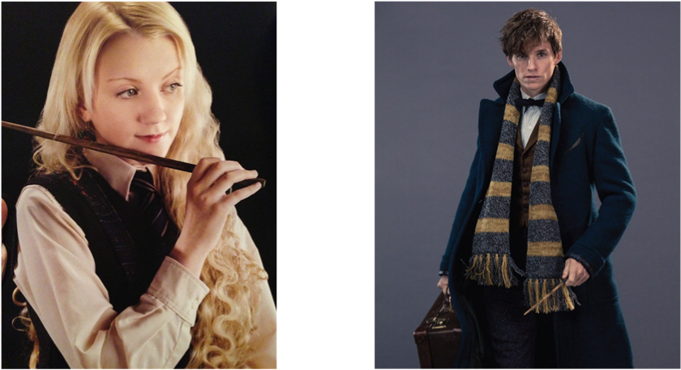
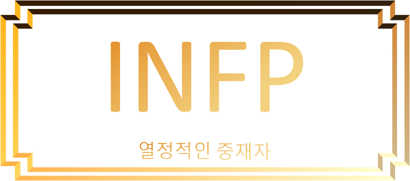

"당신과 비슷한 캐릭터는"

'루나 러브굿(해리포터)' & '뉴트 스캐맨더(신비한 동물 사전)'
#4차원 #몽상가 #동물사랑 #유약 #너드 #고집
- 정열적이고 충실하며, 낭만적이고 내적 신념이 깊은 당신!
- 침착하고 내성적이며 심지어는 수줍음이 많은 사람처럼 비추어지기도 하는 편이에요.
- 그러나 마음속은 언제라도 연료가 공급되는 기회가 오면 크게 타오를 수 있는 열정의 불꽃이 숨어 있어요.
- 그 불꽃은 주변 사람들에 따라서 큰 불꽃이 될 수도 있고 사라질 수도 있겠네요. 그만큼 사람들한테 영향을 많이 받는 사람이에요.
- 게으른 완벽주의자 타입이에요.
- 일을 할 때 본인의 계획대로 순조롭게 진행되지 않거나 결과가 완벽하지 않다고 생각하면, 다시 그 일을 재개하는 것을 꺼리며 아예 도중에 그만두거나 시작조차도 하지 않으려 한답니다.
- 사람을 처음 만났을 때 인성과 성격을 가장 먼저 보는 당신!
- '본인과 맞지 않는 사람'을 빠르게 판단하고 서서히 거리를 둔답니다. 한 번 일정한 선을 넘어버린 사람에게는 마음의 문을 닫아버려요. 하지만 상대방이 알아차리지 못하게 멀어지기 때문에 당사자는 당신에게 거리가 두어지는 것을 모르겠네요.
- 추상적인 개념에 관심이 많은 성격이에요. 상상력이 풍부하고 몽상가적 기질이 많아 공상에 빠지는 걸 좋아하는군요.